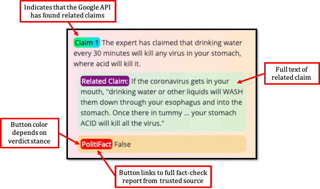

COKN Health Info Check Usage Information
Purpose
COKN Health Info Check is a Chrome browser plugin that mitigates health-related misinformation by bringing relevant fact checks to Chrome users.
Usage Flow & Color Coding on Webpages
When you visit a website, this extension will perform the following:
- The ClaimBuster API, developed at the UT Arlington IDIR Lab, scans the webpage for check-worthy factual claims. These claims will be highligted in a pink-orange color.
- Each check-worthy factual claim will be passed through the Google Fact Check Explorer API to locate related fact-checks from professional outlets. The claims that get results from the Google API will be highlighted in a green-blue color. Note that the claims for which Google's API cannot find related claims will still be highlighted in pink-orange.
Note that both versions of the highlight are scaled in opacity w.r.t the check-worthiness score. A
50% check-worthy claim is much lighter than an
80% check-worthy claim.
Navigating the Popup
